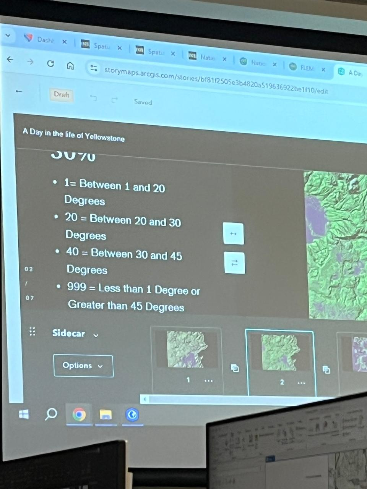
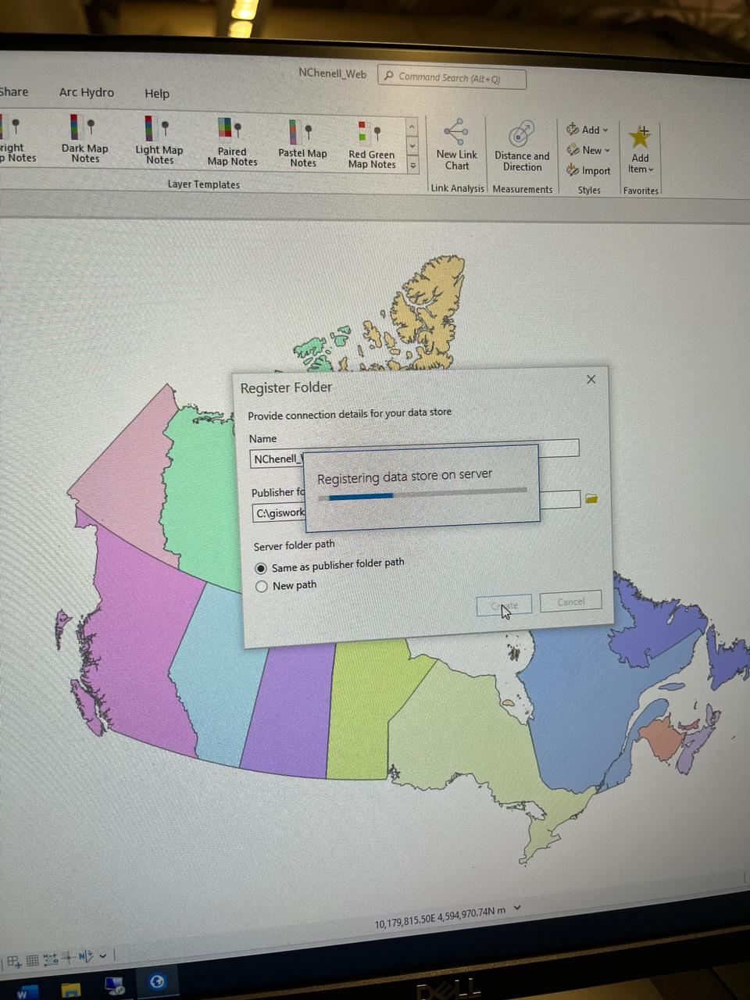
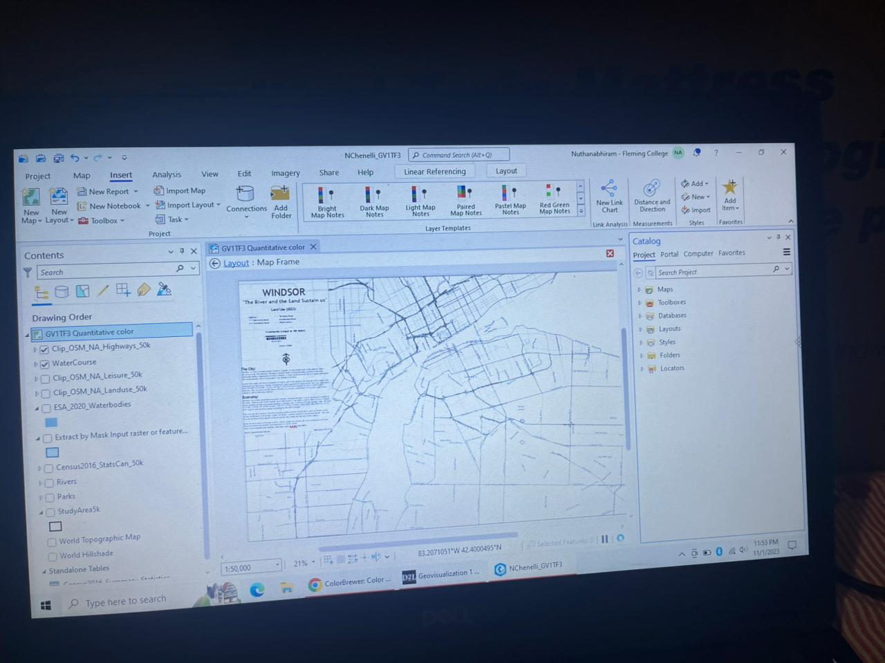

Completed a Geographic Information Systems (GIS) program at Fleming College, gaining in-depth knowledge of spatial data analysis, cartography, and geospatial technologies. Developed proficiency in using industry-standard GIS software including ArcGIS Pro, ArcMap, and QGIS for mapping, data visualization, and spatial analysis. Learned to collect, manage, and analyze spatial datasets, including shapefiles, geodatabases, remote sensing imagery, and LiDAR point clouds. Gained hands-on experience in digitizing maps, georeferencing, performing spatial queries, creating 3D visualizations, and interpreting environmental and land-use data. Applied GIS skills to real-world projects, including natural resource management, urban and rural planning, environmental monitoring, and species distribution analysis. Developed strong analytical, problem-solving, and technical skills, as well as the ability to communicate complex spatial information effectively through maps, reports, and presentations.
-

-

-

Skills Developed
Geospatial Data Management & QA/QC: Geodatabase design & Maintenance | Relational & Enterprise Geodatabases | Spatial Data Standardization | Schema Validation | Metadata Documentation | Raster & Vector Data Models | QA/QC Procedures | Positional Accuracy Validation | CAD Data Integration | Coordinate Systems & Projections | PostGIS | Database Workflow Management | Enterprise Data Standards Compliance | Data Quality Assurance Workflows | Spatial Data Cleaning and Preparation
Enterprise GIS Platforms: ArcGIS Pro | ArcGIS Desktop (ArcMap) | ArcGIS Enterprise | ArcGIS Server | ArcGIS Online | ArcGIS Portal | Network-Based GIS Environments
Automation & Scripting: Python | ModelBuilder | SQL | ETL Workflows | FME | PostgreSQL | JavaScript | Arcade Expressions | Spatial Data Automation and Batch Processing
Spatial Analysis & Cartography: Geoprocessing | Spatial Queries | Overlay Analysis | Suitability Analysis | Terrain Analysis | Geocoding | Remote Sensing | Aerial & Satellite Imagery Interpretation | LiDAR Processing | Environmental Spatial Modelling | High-Quality Cartographic Design | Map Production | Map Set Development | Spatial Pattern Analysis | Land Use and Vegetation Classification
Field & Data Collection Tools: ArcGIS Field Maps | Survey123 | GNSS/GPS Data Collection | Field Data Validation | Field Data Integration into Enterprise Systems | Outdoor Environmental Data Collection Workflows | Mobile GIS Data Capture
Web GIS & Visualization: ArcGIS StoryMaps | Dashboards | Experience Builder | Web Mapping Applications | Website Design | Web GIS Integration | Stakeholder Communication Mapping Products | Interactive Data Visualization
Engineering & CAD Integration: AutoCAD (Working Knowledge) | Civil Engineering Drawing Interpretation | Spatial Data Conversion between CAD and GIS | Engineering Layout Mapping
Education
Post Graduate Diploma in Geographic Information Systems | Fleming College
Projects
➤ Tree Canopy Optimization in the City of Peterborough
• Completed a project with a focus on supporting the City of Peterborough’s objective of increasing urban canopy cover to 35% by 2050.
• Worked extensively with LiDAR point cloud data to assess tree canopy height and distribution, conducted spatial analysis to identify priority areas for canopy growth, and created detailed maps to visualize findings.
• Utilized ArcGIS platforms to perform geospatial processing, develop interactive dashboards, and communicate results effectively to stakeholders. Gained hands-on experience in applying GIS tools and data visualization techniques to support urban forestry planning and environmental sustainability goals.
• Dashboard: Click here for Dashboard
• Field Maps: Click here for field maps
• Tree Planting Planner: Click here for Tree Planting Planner
➤ City data assets of Kawartha Lakes
• Carried out a project focused on identifying the most efficient methods to collect and display data from the public for reporting on city assets.
• Worked extensively with Field Maps and ArcGIS platforms to design and test data collection workflows, while also utilizing Leaflet for interactive mapping.
• Developed web-based solutions to present collected information in a clear and accessible format, ensuring ease of use for both the public and city officials.
• Enhanced skills in geospatial data management, web design, and user-focused application development.
• Link: Website of our project
➤ Wind Farm Suitability Analysis in Ottawa
• Conducted a Multi-Criteria Decision Analysis (MCDA) to identify suitable locations for windfarm development in Ottawa.
• Collected and integrated diverse spatial datasets, including land use, elevation, wind speed, proximity to transmission lines, and environmental constraints.
• Applied weighted overlay and spatial analysis techniques in ArcGIS to evaluate site suitability and generate suitability maps.
• Produced visual outputs and reports to support renewable energy planning, gaining experience in spatial decision-making, data integration, and sustainability-focused analysis.
• Link: Link to Story Map
➤ Species at Risk Habitat Mapping in Ontario
• Compiled, standardised and managed spatial datasets for species at risk (SAR), improving data consistency and supporting accurate habitat mapping and conservation planning.
• Performed spatial analysis integrating remotely sensed imagery and SAR datasets to identify priority habitats, supporting conservation planning decisions.
• Produced cartographic maps and summary outputs that clearly communicated SAR distribution, supporting stewardship planning and informed conservation decision-making.
• Documented and maintained metadata for spatial datasets to ensure data integrity, traceability, and longterm usability.
Volunteer Experience
➤ GIS & Spatial Data Volunteer - Tomkulak Consortium (Present)
• Collaborated with an international GIS and data team to support spatial data management and environmental geospatial workflows.
• Performed SQL-based spatial queries and database operations to support data analysis and spatial data preparation tasks.
• Worked within a PostGIS enterprise environment to maintain, query, and validate spatial datasets.
• Applied QA/QC validation procedures to ensure positional accuracy, attribute completeness, and overall dataset reliability before system integration.
• Supported structured geodatabase workflows aligned with enterprise GIS data management standards.
• Assisted in spatial data cleaning, transformation, and standardization for multi-source dataset integration.
• Contributed to maintaining high-quality geospatial datasets for collaborative project use and decision-making support.
• Communicated technical GIS findings and database outputs within a remote, multidisciplinary team environment.
➤ Map Editor – The National Map Corps (USGS) (Present)
• Contribute to the accuracy of national geospatial datasets by editing, validating, and updating structure points such as schools, hospitals, and other landmarks.
• Ensure compliance with USGS data standards to improve positional accuracy and data consistency.
• Demonstrate attention to detail when reviewing, correcting, and documenting spatial features, reinforcing strong data stewardship practices.
Certifications
Creating and sharing content in ArcGIS Online – ESRI
ArcGIS Online basics – ESRI
Introduction to coordinate systems – ESRI
Learning Relational Databases – LinkedIn